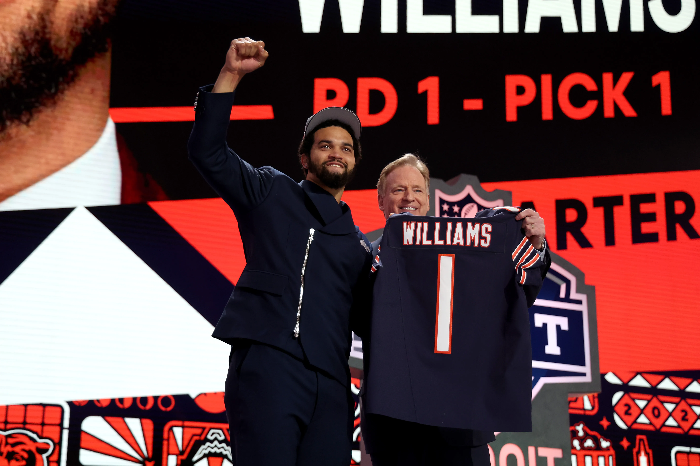
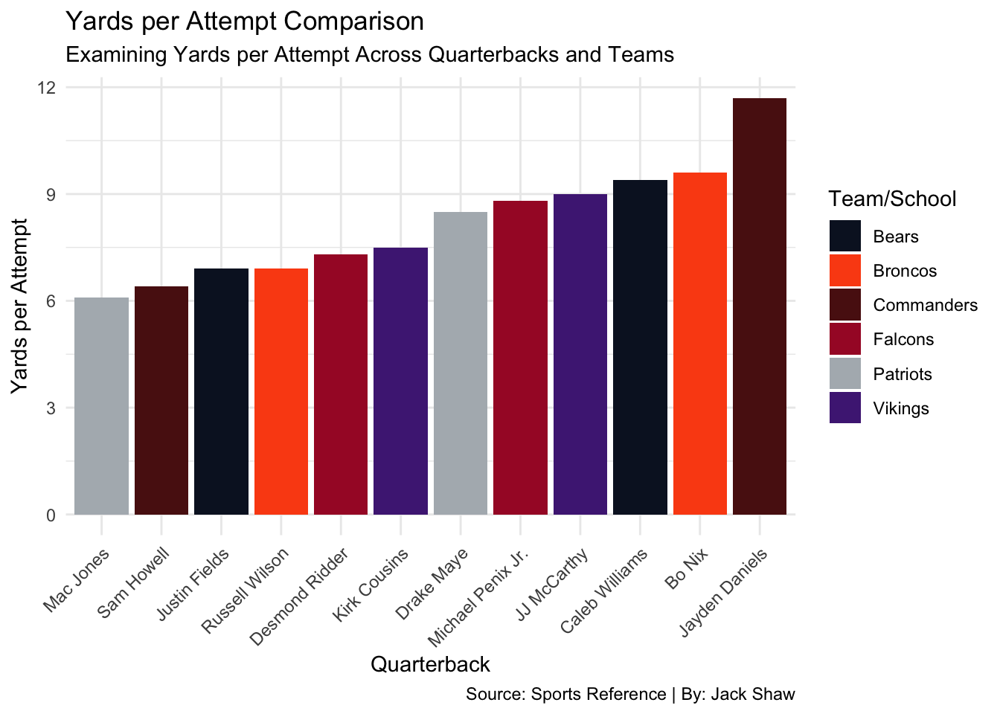
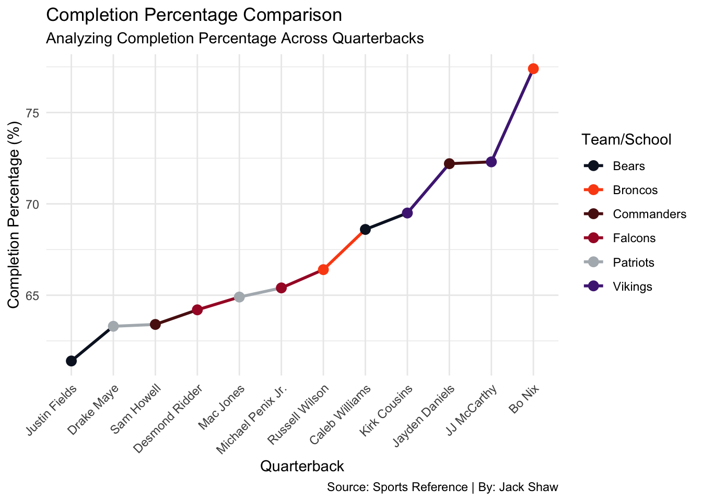
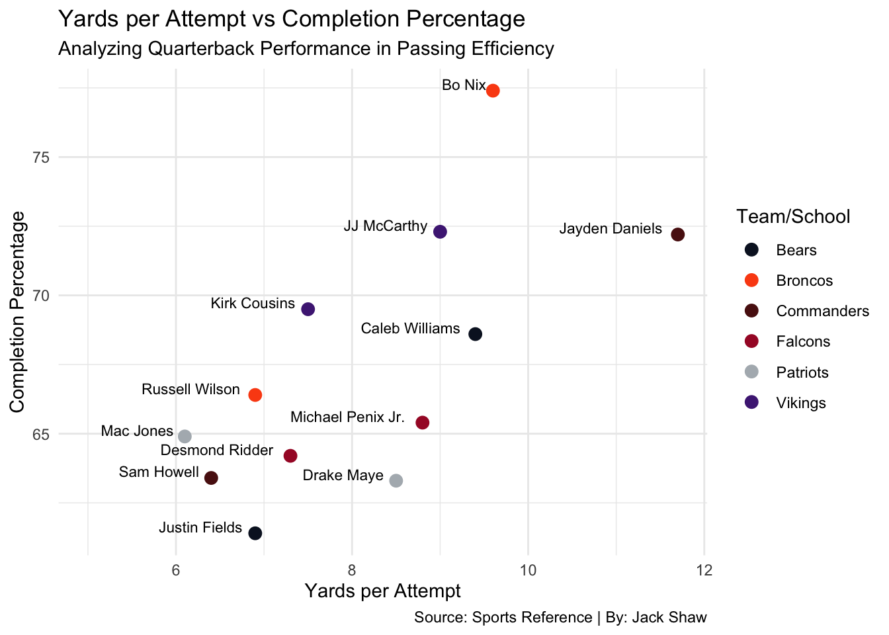
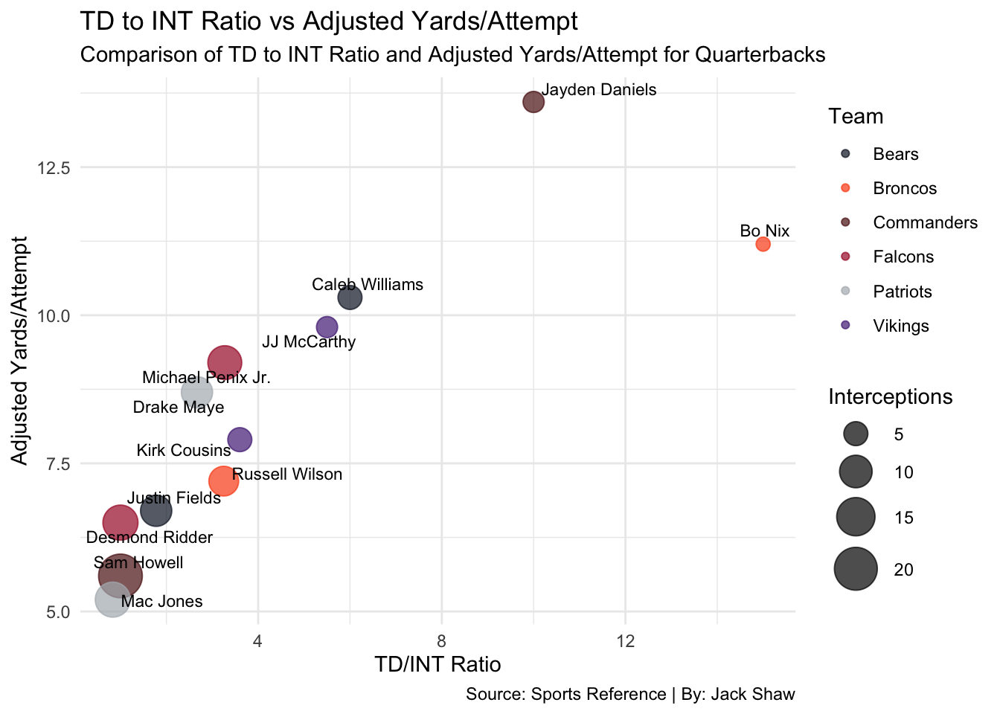

Draft Day Decisions: Unpacking the Impact of First-Round Quarterbacks in 2024
Sports
Football
Analysis
Author
Jack Shaw
Published
May 4, 2024

In the high-stakes world of professional football, the quarterback position is king. With the 2024 NFL Draft ushering in a new wave of talent, football fans are looking forward to the debuts of six first-round quarterbacks. But how do these rookies compare to their more experienced predecessors? Let’s look at the data to see what’s going on with these bright young quarterbacks and their more established rivals.
Yards per attempt: Measuring passing efficiency
Yards per attempt is a measure of a quarterback’s passing efficiency, defining the balance between gaining large yardage and reducing interception risk. When we compare the rookie quarterbacks’ yards per attempt to those of their predecessors, interesting trends emerge. From Michael Penix Jr.’s explosive downfield passing to JJ McCarthy’s surgical perfection, each rookie has a unique flair on the field. How do these newbies compare to seasoned veterans like Russell Wilson and Kirk Cousins in this crucial facet of quarterback performance?
Code
library(tidyverse)library(ggrepel)library(readr)QBStats<-read_csv("QBStats.csv")team_colors <-c("Bears"="#0B162A", "Broncos"="#FB4F14", "Vikings"="#4F2683","Commanders"="#5A1414", "Falcons"="#A71930", "Patriots"="#B0B7BC")ggplot() +geom_col(data = QBStats, aes(x =reorder(Player, `Yards/Attempt`), y =`Yards/Attempt`, fill =`Team/School`), position =position_dodge()) +scale_fill_manual(values = team_colors) +labs(title ="Yards per Attempt Comparison", subtitle ="Examining Yards per Attempt Across Quarterbacks and Teams",x ="Quarterback", y ="Yards per Attempt",caption ="Source: Sports Reference | By: Jack Shaw") +theme_minimal() +theme(axis.text.x =element_text(angle =45, hjust =1))

The final chart examines yards per attempt across the board. Here, Caleb Williams and Bo Nix shine, suggesting that their play style not only emphasizes accuracy but also an ability to drive the ball downfield. Such attributes can translate into explosive plays, which are key components of winning games in the NFL.
Completion Percentage: A Measure of Accuracy
Elite quarterbacks are known for their accuracy, and their completion % reflects their ability to deliver accurate throws to their intended targets. As we compare the rookie quarterbacks’ completion percentages to those of their predecessors, we discover surprising trends. How do newbies Caleb Williams and Jayden Daniels stack up against seasoned veterans Justin Fields and Sam Howell in terms of accuracy?
Code
ggplot() +geom_line(data = QBStats, aes(x =reorder(Player, `Completion %`), y =`Completion %`, group =1, color =`Team/School`), size =1) +geom_point(data = QBStats, aes(x =reorder(Player, `Completion %`), y =`Completion %`, color =`Team/School`), size =3) +scale_color_manual(values = team_colors) +labs(title ="Completion Percentage Comparison", subtitle ="Analyzing Completion Percentage Across Quarterbacks",x ="Quarterback", y ="Completion Percentage (%)",caption ="Source: Sports Reference | By: Jack Shaw") +theme_minimal() +theme(axis.text.x =element_text(angle =45, hjust =1))

The trend line in this chart offers a straightforward visual of completion percentage across quarterbacks. The rookies, particularly JJ McCarthy and Bo Nix, demonstrate high completion percentages, which are indicative of accuracy and possibly a quick adaptation to the NFL’s demands, an essential trait for success in professional leagues.
Quarterback rating provides a thorough assessment of a quarterback’s performance, taking into account metrics such as passing efficiency, touchdown-to-interception ratio, and overall effectiveness. By comparing the rookie quarterback ratings to those of their predecessors, we can acquire useful insights into their respective contributions on the field. Do these rookies have the capacity to rise to the level of experienced stars such as Mac Jones and Desmond Ridder? Or will they have difficulty adapting to the demands of the NFL?
This comparison of quarterback ratings clearly delineates the high ceiling of rookies like Caleb Williams and JJ McCarthy. Their high ratings suggest that they are well-prepared to make an immediate impact. This could be particularly crucial for teams like the Vikings and Broncos looking for a fresh start under center.
Code
ggplot() +geom_point(data = QBStats, aes(x =`Yards/Attempt`, y =`Completion %`, color =`Team/School`), size =3) +scale_color_manual(values = team_colors) +geom_text(data = QBStats, aes(x =`Yards/Attempt`, y =`Completion %`, label = Player), vjust =-0.1, hjust =1.15, size =3) +labs(title ="Yards per Attempt vs Completion Percentage",subtitle ="Analyzing Quarterback Performance in Passing Efficiency",x ="Yards per Attempt",y ="Completion Percentage",caption ="Source: Sports Reference | By: Jack Shaw") +scale_x_continuous(limits =c(5, NA)) +theme_minimal()

Focusing on passing efficiency, this graph reveals interesting contrasts in styles. Bo Nix and Jayden Daniels show high completion percentages coupled with aggressive yards per attempt, positioning them as likely efficient passers for their teams. The data implies that these players could offer reliable, high-impact passing options compared to some incumbents like Russell Wilson and Kirk Cousins, who exhibit less efficiency in these metrics.
TD to INT Ratio and Adjusted Yards/Attempt: Exploring Efficiency
In the pursuit of quarterback brilliance, a balance between touchdown passes and interceptions is critical. This measure, along with adjusted yards per attempt, which takes into account the quality of each passing attempt, provides a more sophisticated picture of quarterback efficiency. What are the rookie quarterbacks’ touchdown-to-interception ratios and adjusted yards per attempt compared to their predecessors? Is there evidence of future success or room for growth in their performance?
Code
QBStats <- QBStats |>mutate(TD_INT_Ratio = TDs / Interceptions)ggplot() +geom_point(data = QBStats, aes(x = TD_INT_Ratio, y =`Adjusted Yards/Attempt`, size = Interceptions, color =`Team/School`), alpha =0.7) +scale_color_manual(values = team_colors) +scale_size(range =c(3, 10)) +labs(title ="TD to INT Ratio vs Adjusted Yards/Attempt",subtitle ="Comparison of TD to INT Ratio and Adjusted Yards/Attempt for Quarterbacks",x ="TD/INT Ratio",y ="Adjusted Yards/Attempt",size ="Interceptions",color ="Team",caption ="Source: Sports Reference | By: Jack Shaw") +geom_text_repel(data = QBStats, aes(x = TD_INT_Ratio, y =`Adjusted Yards/Attempt`, label = Player), box.padding =unit(0.2, "lines"), size =3) +theme_minimal()

This chart provides a comparison between the touchdown-to-interception (TD/INT) ratio and adjusted yards per attempt for each quarterback, highlighting both the rookies and their predecessors. Notably, Caleb Williams stands out with an impressive combination of high adjusted yards per attempt and a strong TD/INT ratio, suggesting a potentially transformative impact for the Bears. Jayden Daniels also shows promise with similar metrics, potentially providing a significant upgrade for the Falcons.
General Analysis
Across the charts, the rookies, especially Caleb Williams, Bo Nix, and Jayden Daniels, show metrics that either meet or exceed those of their more seasoned counterparts. This bodes well for their teams, suggesting that the draft picks might pay off quicker than expected, with potential immediate impacts on the field.
This narrative structure should give your readers a clear understanding of the metrics and how these relate to both individual and team prospects, driving home the significance of these first-round picks.